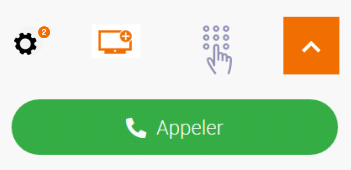
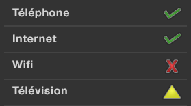
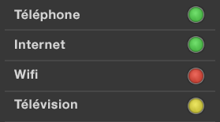

Web designer - Couleurs et contrastes
S’assurer que les couleurs utilisées ne posent pas de problème à l’utilisateur
Assurer un contraste suffisant entre les couleurs de premier plan et de fond #
Cible : tout le monde, en particulier les utilisateurs sur mobile et tablette, les personnes malvoyantes, éprouvant des difficultés de lecture ou avec un déficit d’attention et les seniors.
Quand : dès la phase de conception et lors du développement.
Description :
Le niveau de contraste entre le texte ou un composant graphique et l’arrière-plan doit être suffisamment élevé.
Un niveau de contraste insuffisant sera préjudiciable pour les utilisateurs ayant des difficultés visuelles ainsi que pour les utilisateurs de mobiles et tablettes se trouvant dans un environnement très lumineux.
Exemple non-valide :
Le texte « film | 20h40… » ne présente pas un contraste suffisant. Celui-ci ne sera pas lisible par tous les utilisateurs.

Les icônes ci-après sont porteuses d’information pour les utilisateurs. Elles devront alors avoir un contraste de couleur de 3:1.

À vérifier :
- S'assurer que le contraste entre la couleur du fond et celle du texte et également pour du texte sous forme d’image porteur d’information, est :
- De 4.5:1 minimum pour une taille inférieure à 24px CSS et 19px CSS en gras
- De 3:1 minimum pour une taille est supérieure à 24px CSS et 19px CSS en gras
- Cas particulier des liens non soulignés :
- Ces liens doivent avoir un rapport de contraste de 3:1 avec le texte qui les entoure
- Ces liens doivent avoir un autre moyen que la couleur permettant de les distinguer au focus clavier ou au survol souris
- S'assurer que les objets graphiques porteurs d'information non-textuelle, les composants d’interface utilisateur et les états de l'interface (focus, hover…) ont un contraste de 3:1. Sont concernés, entre autres : les boutons, les boutons radios, les cases à cocher, les listes de sélection, les menus et volets de navigation, les barres d’outils, les onglets, les carrousels, les curseurs, les barres de progression, les bulles d’aides, les barres de progression, les graphiques…
Nous ne sommes pas tenus d'appliquer ce critère :
- Si le composant graphique ne peut pas être représenté autrement (drapeau, logotype, photos réelles, captures d'écran, diagrammes d'informations médicales utilisant les couleurs de la biologie, dégradés représentant une mesure, cartes de chaleur…)
- Si un texte, comme un label, un tableau de données… apporte la même information que l’icône ou le graphique.
- Si le manque de contraste de l’image n'empêche pas la compréhension du contenu ou d'identifier la fonction
- Si un composant d'interface est inactif et donc peut être ignoré par l’utilisateur sans réelle perte d'information.
- Attention : pour des applications principalement utilisées en web mobile ou en mobilité, le niveau de contraste des principaux éléments doit être de 7:1 afin d’assurer une bonne lisibilité pour tous
Outil :
L’application Colour Contrast Analyser permet de mesurer rapidement des niveaux de contraste de couleurs (gratuit pour Mac et Windows).
Ne pas utiliser la couleur ou l’information sensorielle comme seule source d’information #
Cible : tout le monde, en particulier les daltoniens et plus généralement les personnes malvoyantes ou ayant une déficience cognitive, auditive et les seniors.
Quand : dès la phase de conception et lors du développement.
Description :
Ne pas utiliser la couleur ou une information sensorielle (forme, taille, son, orientation, localisation visuelle…) comme la seule façon de véhiculer de l’information, d’indiquer une action, de solliciter une réponse ou de distinguer un élément. L’information fournie par un changement de couleur ou une information sensorielle doit être complétée par une information textuelle (alternative) ou/et structuration sémantique.
À vérifier :
- Faire une capture d’écran et la passer en noir et blanc. La perte des couleurs ne doit pas entraîner de difficulté dans la navigation, ni provoquer de perte d’information.
- Couper le son, le niveau d’information doit rester identique.
- S'assurer que les liens sont identifiables par un autre moyen que la couleur (en général, le soulignement). S'ils ne sont pas soulignés, sur le focus et le survol souris, fournir un autre moyen que le couleur pour les distinguer.
Exemple valide :

Exemple non-valide :

Cet exemple n’est pas valide, car l’information est transmise uniquement par la couleur.